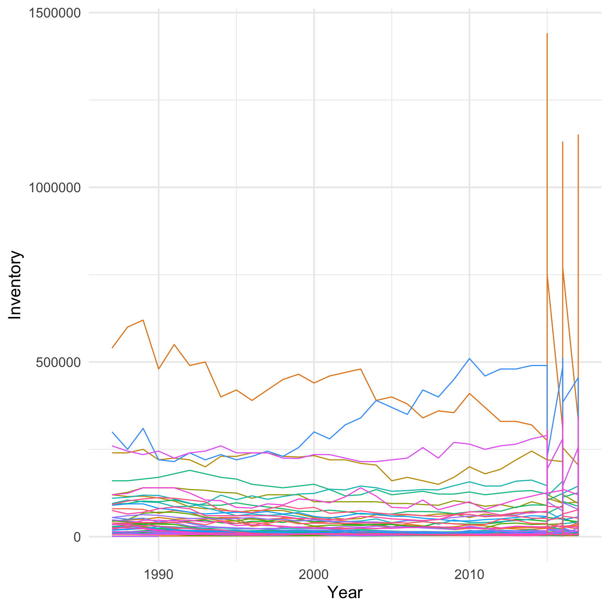

16 Environment
Bees are an important environmental issue. They pollinate crops, trees and other plants. They’re a keystone species that much of life on Earth depends on. So I went looking for some data on bee populations over time.
16.1 Data
I found this data on bees on data.world, posted by Brenda Griffith, who got the data from United States Department of Agriculture National Agricultural Statistics Service Quick Stats Dataset.
After looking at the table, it seems that the data I want is probably in the Year, Period, State, Data Item, and Value columns. I’ll familiarise myself with the data using the count() function.
| Data Item | n |
|---|---|
| ADDED & REPLACED | 450 |
| INVENTORY | 1778 |
| INVENTORY, MAX | 450 |
| LOSS, COLONY COLLAPSE DISORDER | 268 |
| LOSS, DEADOUT | 450 |
It looks like Data Item is different types of values, so let’s select just the interesting columns and filter to
Code
| Year | Period | State | Inventory |
|---|---|---|---|
| 2017 | MARKETING YEAR | ALABAMA | 7000 |
| 2017 | MARKETING YEAR | ARIZONA | 22000 |
| 2017 | MARKETING YEAR | ARKANSAS | 29000 |
| 2017 | MARKETING YEAR | CALIFORNIA | 335000 |
| 2017 | MARKETING YEAR | COLORADO | 33000 |
| 2017 | MARKETING YEAR | FLORIDA | 205000 |
16.2 Initial Plot
Make a quick plot to orient to the data.
Code

OK, there’s something odd going on after 2015. It looks like data were just recorded for the “MARKETING YEAR” up to 2015, when they also started getting recorded by quarter.
Code
| Year | MARKETING YEAR | FIRST OF APR | FIRST OF JAN | FIRST OF JUL | FIRST OF OCT |
|---|---|---|---|---|---|
| 2017 | 40 | 45 | 45 | NA | NA |
| 2016 | 40 | 45 | 45 | 45 | 45 |
| 2015 | 40 | 45 | 45 | 45 | 45 |
| 2014 | 40 | NA | NA | NA | NA |
| 2013 | 39 | NA | NA | NA | NA |
| 2012 | 40 | NA | NA | NA | NA |
| 2011 | 40 | NA | NA | NA | NA |
| 2010 | 40 | NA | NA | NA | NA |
| 2009 | 40 | NA | NA | NA | NA |
| 2008 | 41 | NA | NA | NA | NA |
Let’s limit the data to just “MARKETING YEAR”.
16.3 Too much data
There’s too much data on the plot. Let’s deal with it by faceting the plot by quantiles.
Code
qu <- seq(0, 1, length.out = 5)
state_quantiles <- bee_inventory %>%
filter(Period == "MARKETING YEAR") %>%
group_by(State) %>%
summarise(max_inv = max(Inventory),
.groups = "drop") %>%
mutate(quantile = case_when(
max_inv <= quantile(max_inv, qu[2]) ~ 1,
max_inv <= quantile(max_inv, qu[3]) ~ 2,
max_inv <= quantile(max_inv, qu[4]) ~ 3,
max_inv <= quantile(max_inv, qu[5]) ~ 4
))
bee_quants <- bee_inventory %>%
filter(Period == "MARKETING YEAR") %>%
left_join(state_quantiles, by = "State") %>%
mutate(State = str_to_title(State))16.4 Labels
Make labels for each state with a y-axis value that spaces them evenly but roughly orders them by the last year’s inventory.
Code
# make labels for each state
state_labels <- bee_quants %>%
group_by(State) %>%
filter(Year == max(Year)) %>%
ungroup() %>%
group_by(quantile) %>%
arrange(Inventory) %>%
mutate(rank = n() + 1 - row_number(),
y = seq(0, max(max_inv), length.out = n())) %>%
ungroup() %>%
select(State, quantile, y, rank)
## Add ranks to bee_quants
bee_quants <- bee_quants %>%
left_join(state_labels, by = c("State", "quantile"))Make a label for each quantile with the names of all the states. Use str_wrap() to make sure it fits on the plot facet.
Code
facet_labels <- state_quantiles %>%
group_by(quantile) %>%
summarise(max = paste0(max(max_inv)/1000, "K"),
states = paste(State, collapse = ", "),
.groups = "drop") %>%
mutate(
label = glue::glue("States under {max} Colonies")
) %>%
arrange(quantile) %>%
pull(label)
names(facet_labels) <- as.character(seq_along(facet_labels))16.5 Plot
Styling the colour-coded states on the right was tricky. I had to add some padding to the right, using expand = expansion(add = c(1, 11) in scale_x_continuous(). It still had the grid lines, so I first tried to cover it with a white square using geom_rect(), but realised I needed to use stat_summary() to calculate the maximum value on the y-axis for each facet. Then I used geom_text() to place all of the state labels at 2018 on the x-axis and the y-value calculated in state_labels.
Code
#|fig.cap: Bee colonies are decreasing, especially in states with a maximum inventory under 46K colonies.
#| fig.alt: Bee colony inventories for each US state, plotted from 1985 to 2017. Data are plotted in 4 panels based on maximum inventory: under 20K, under 46K, under 94K and under 640K. States under 20K have mostly decreased, but some increased. States under 46K decreased dramatically in the late 1990s and never recovered. States under 94K are mixed, some have decreased and some increased. States under 106K have most held steady, with a big decrease in California but a comparable increase in North Dakota.
bee_quants %>%
ggplot(aes(x = Year, y = Inventory, group = State, color = as.factor(rank))) +
geom_line(show.legend = FALSE) +
stat_summary(aes(ymax = Inventory, group = quantile),
geom = "rect", fun.max = max,
xmin = 2017.5, xmax = 2038, ymin = 0,
fill = "white", color = "white") +
geom_text(aes(label = State, y = y),
state_labels, size = 3.5,
hjust = 0, vjust = 0.5, x = 2018,
show.legend = FALSE) +
scale_x_continuous(NULL,
breaks = seq(1990, 2015, 10),
expand = expansion(add = c(1, 15))) +
scale_y_continuous(
name = "Bee Inventory",
labels = scales::label_number(scale = 1/1000, suffix = "K")) +
expand_limits(y=0) +
scale_color_manual(values = rainbow(13, v = .7)) +
facet_wrap(~quantile, scales = "free_y",
labeller = as_labeller(facet_labels),
nrow = 2) +
labs(title = "Bee Colony Inventories in the United States",
caption = "Data from data.world | Plot by @lisadebruine") +
theme(
plot.title = element_text(size = 20, hjust = 0.5),
strip.text = element_text(size = 15),
plot.caption = element_text(size = 11, color ="grey40")
)